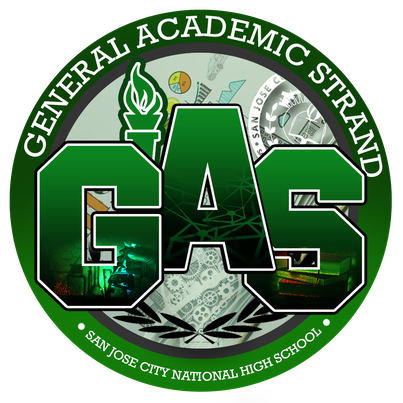

GAS
General Academic Strand, which has subjects selected from the different strands. This strand is ideal for SHS students who have not yet decided on a particular specialization. This strand, which is also a viable offering in secondary schools with a low student population, allows for electives that may be a combination of related subjects from the other tracks or strands in the SHS curriculum.
